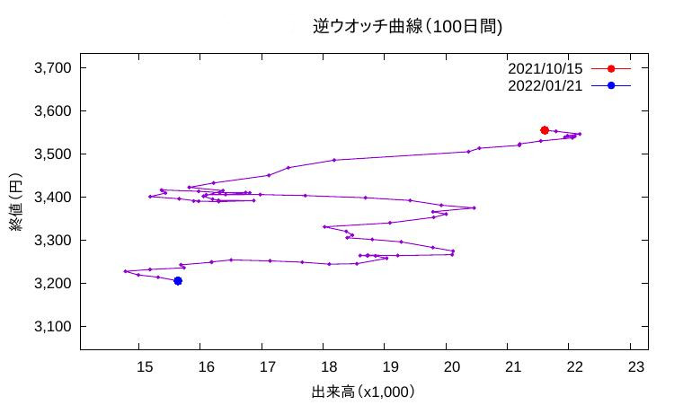

逆ウォッチ曲線をgnuplotで描く
株の 出来高 をX軸、 終値 をY軸にとってプロットした図を 逆ウォッチ曲線 と言います。名前からすると海外で作られた株価チャート分析手法のように見えますが、日本で開発されたもののようです（吉見, 2006）1。
逆ウォッチ曲線については、ネット上には良い紹介記事がたくさんあります （例えば日興イージートレード, auカブコム証券 第17回逆ウォッチ曲線, 大和証券 逆ウォッチ曲線 など）。またGnuplotをつかって逆ウォッチ曲線を描くことに関しては こちらなどに記事があります。
ここでは それらの説明は省略して gnuplot で 図1 のような 逆ウォッチ曲線を描く 方法の 骨子 だけを紹介します。

図1: 逆ウォッチ曲線の例図
図では期間は100日間になっていますが、起動時に任意の日数を指定できます。また株の銘柄名も起動時に短縮名（ローマ字）を入れることで指定できます。銘柄名は図タイトル「逆ウォッチ」の前に印字されますが上の例図では消してあります。
<font color="red">赤丸</font> がスタート点、<font color="blue">青丸</font>が終点です。
1 骨子の説明
以下、順を追って説明します。
1.1 データファイルを作ります
興味ある会社の株価と出来高のデータを用意します。こんな感じです（図1 とは関係ありません）。
(日付) （出来高）（株価） : : : 2022-01-18 2007200 2537.0 2022-01-19 2514600 2493.0 2022-01-20 2612300 2525.0 2022-01-21 2011100 2540.5
日付(d ate), 出来高(v olume), 株価(p rice) なので dvp データと呼びます。
1.2 移動平均を計算します
上の元データ( ./tmp-dvp.dat )から awk を使って窓サイズ 25日 で移動平均を求め、別ファイル（ tmp-out.dat ）に格納します。
# 移動平均計算パート input_file=./tmp-dvp.dat window_size=25 i=${window_size} # cp /dev/null ./tmp-out.dat wc_l=$( cat ${input_file} | wc -l ) # while [ $i -lt $(( $wc_l + 1 )) ] do head -n $i ${input_file} | tail -n ${window_size} > ./tmp.dat awk '{a+=$2}{b+=$3} END{print $1, a/NR,b/NR;}' tmp.dat >> ./tmp-out.dat i=$(( $i + 1 )) done
このコードはこちらを参考にさせていただきました。
1.3 Gnuplot用の変数をbashスクリプト内で用意します
Gnuplotに引き渡す変数やファイル名などをbashスクリプト内で準備します。
cp ./tmp-out.dat ${wrk_dir}/data-to-plot.dat
data_to_plot=${wrk_dir}/data-to-plot.dat
#
from_date=$(date -d "${days} days ago" '+%Y/%m/%d')
latest=$(tail -1 ${wrk_dir}/revcd-${stock}-dvp.csv | awk '{print $1}')
to_date=$(date -d ${latest} '+%Y/%m/%d')
#
mytitle=${stock_name}" 逆ウオッチ曲線"
1.4 Gnuplotをコールするパート
bashスクリプト内でGnuplotを呼び出すパートです。
# gnuplotのコール gnuplot -e \ "fig_title='$mytitle';\ days='$days';\ start_date='$from_date';\ end_date='${to_date}'"\ ~/bin/counter-clock-curve.plt
1.5 Gnuplotスクリプト本体
counter-clock-curve.plt の中身です。変数の書き方がGnuplotスクリプト内とbashスクリプト内でちょっと異なっていますので注意してください。
Gnuplotの配列を使って描出します。出来高は数百万株になることがありますので、 1000で割った値にしてY軸のlabelに x1000の注記をいれました。
data_to_plot='./data-to-plot.dat' # stats data_to_plot using 2:3 nooutput xmax = ( STATS_max_x/1000 * 1.05 ) xmin = ( STATS_min_x/1000 * 0.95 ) ymax = ( STATS_max_y * 1.05 ) ymin = ( STATS_min_y * 0.95 ) # タイトル set title fig_title."（".days."日間)" font "Arial, 14" # ターミナル設定 set terminal pdfcairo transparent enhanced font "Arial, 12" # スタイル設定 set style fill transparent solid border set boxwidth 0.6 relative # 数値表現の設定 set decimal locale set format x "%'5.0f" set format y "%'5.0f" set xlabel "出来高（x1,000）" font "Arial, 12" set ylabel "終値（円）" font "Arial, 12" # N = STATS_records array X[N] array Y[N] stats data_to_plot using (X[$0+1] = $2, Y[$0+1] = $3, 0) nooutput set xrange[xmin:xmax] set yrange[ymin:ymax] set colorsequence default # set output "./tmp-out.pdf" # plot Y using (X[$1]/1000):(Y[$1]) w lp pt 7 ps 0.25 notitle ,\ '' using (X[1]/1000):(Y[1]) w lp pt 7 ps 0.6 lt rgbcolor 'red' title start_date,\ '' using (X[N]/1000):(Y[N]) w lp pt 7 ps 0.6 lt rgbcolor 'blue' title end_date set output pause -1
このコードはこちらを参考にしました。
2 まとめ
コードの要点となる部分だけを抜き出して紹介しました。これ以外にも、ウエブサイトからデータを取得するパートやUI（ユーザーインターフェイス）のパート、それから他の株価のデータ処理スクリプト類との帳合をとるパートなどがありますが、煩瑣になるので省略しました。あしからず・・・。
なお逆ウォッチ曲線の考え方や利用方法はよく分かるのですが、これを使って売買判断をした場合のパフォーマンスがどうなるか、シミュレーションでも良いから調べた研究結果があればそれをを知りたいと思っています。
一般の科学分野、とくに基礎科学の分野ではすべての情報は公開されることが原則です。 けれども株や投資などお金に関わる知見や技術は、たいがいの情報は非公開です。 まぁ公開すると、投資に関わるいろいろな業種が成り立たないわけですから仕方ないとは思いますが・・・。
3 Footnotes:
脚注:
「逆ウォッチ曲線」の英語名を調べてみると、英語の記事ではほとんどそれらしい単語が見つかりません。日本語の記事では anti watch curve, counter colock curve, contrary watch curve などさまざまです。ようするに「反時計回り曲線」ということですよね。上に引用した吉見氏はcounter clock curveを採用されていました。